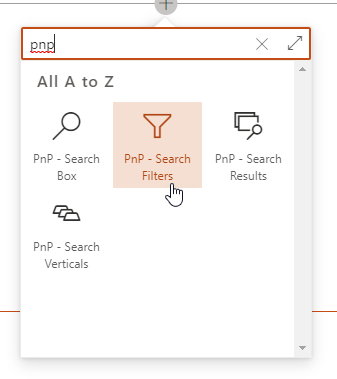
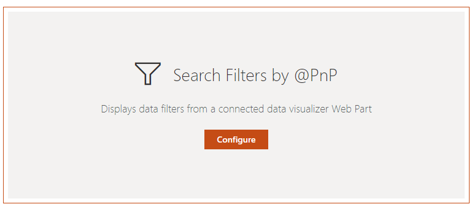
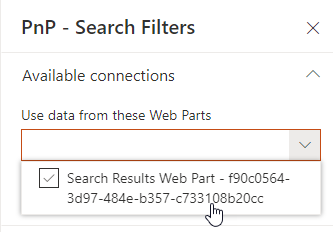
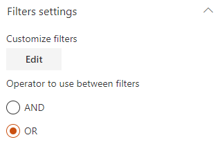
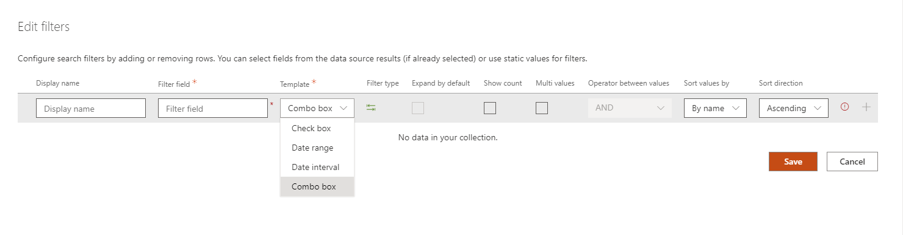
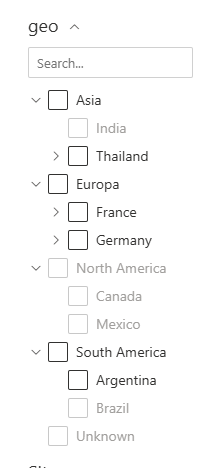
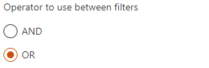
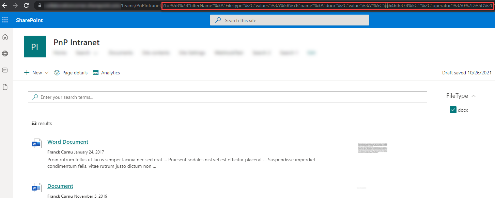

Search Filters Web Part¶
The 'Filters' Web Part allows to filter the current results displayed in a 'Search Results' Web Part. This component is higly configurable to meet you requirements and it works for all data sources.


Configuration¶
Connection¶
To use the filters, we must first connect it to one or multiple 'Search Results' Web Parts. In the other hand, you must connect back those Web Parts to the 'Filters' one. It is a two-ways connection.

If you connect more than one Web Part, the filter values and counts will be merged for similar filter names:
Example
Data sources #1 and #1 expose respectively a 'FileType' filter with values and counts value1:1, value2:1 for #1 and value2:1, value4:1 for #2 and both are connected to the filters Web Part. In this case, a single 'FileType' filter name will be displayed (because the filter name is the same) with values value1:1,value2:2,value3:1,value4:1. If you select a value that is not present in a data source (ex: value1 for data source #2), you will simply get zero result.
Filter settings¶

The filter settings are as follow:

| Setting | Description |
|---|---|
| Display Name | A friendly name for the filter |
| Filter field | The internal data source field to use as filter. Here you can select a field from the current data source (if data have been already retrieved) of type your own custom value (press enter to validate). |
| # of values | The maximum number of values to be retrieved for a given filter. This value is useful if you use SharePoint refiners with a lot of refiner values. By default SharePoint will only retreve the first 100 values. To get all refiner values, you must specify an higher number manually (maximum value is 1000). |
| Show warning when limit is reached | Off by default. When enabled, an info icon appears after the filter title if the connected API returns a number of refiner or aggregation values equal to or greater than the configured # of values limit. Hover the icon to see the warning details. |
| Template | The template to use to display filter values. The builtin templates are:
|
| Expand by default | If applicable for the selected template, display values as expanded. |
| Show count | If applicable for the selected template, display counts for values. |
| Mutli values | If applicable for the selected template, allow selection of multiple values. |
| Operator between values | If multi values is selected, the operator to use between values (OR/AND). |
| Sort values by | Sort values by name or by count. |
| Sort direction | Sort values in ascending/descending order. |
Refiner value limit warning¶
Use Show warning when limit is reached together with # of values when a filter can return many refiner or aggregation values.
When the warning is enabled, an info icon is shown next to the filter title if the connected API reports that the configured # of values limit was reached. This means the visible filter list may be truncated and not all matching values are currently shown.
For troubleshooting, PnP Modern Search also writes a browser console message for each refiner or aggregation showing how many values were returned by the API and what limit was configured. When the returned count matches or exceeds the configured limit, the message is emitted as a warning and notes that additional values may have been truncated by the API.
Example console warning:
[PnP Modern Search][SharePoint Search] Refiner 'RefinableString00' returned 500 item(s), matching or exceeding the configured limit of 500. Additional values may have been truncated by the API.
This is useful when:
- you keep # of values lower than 1000 for performance or readability
- you want to warn users that they should narrow their search before trusting the full filter list
- you need a visible hint that increasing # of values may expose more refiner values
Hierarchical refiner (taxonomy)¶
Use the Hierarchical Refiner template when you want to browse and filter terms as a tree (parent/child hierarchy).
This template is designed for taxonomy-backed fields (typically RefinableStringXX values returned by search refiners).

Hierarchical settings¶
When the Hierarchical Refiner template is selected, a Hierarchical Settings entry appears in the filter row.
| Setting | Description |
|---|---|
| Term Set | Select the term set used to build the tree. Term sets are grouped by term group, and you can search within available term sets. |
| Cache Duration | Number of days to cache retrieved terms (1-5 days, default 3). |
| Hide nodes not in the current data set | Removes branches that do not contain any values returned in the current result set. This option is useful when many terms are never or rarely used, making large parts of the tree irrelevant. |
| Expand all nodes by default | Expands the full taxonomy tree when the filter loads. This is different from the general Expand by default option, which only expands the root level. |
| Refresh Cache Now | Clears the cached terms for the selected term set. The terms are fetched again the next time the hierarchical tree is loaded. |
Option behavior with hierarchical template¶
| General filter option | Behavior with Hierarchical Refiner |
|---|---|
| Expand by default | Supported. Expands only the root level of the hierarchy. |
| Show count | Not shown in the hierarchical tree UI. |
| Multi values | The hierarchical tree behaves as single-select in the UI. Only one active selection is kept at a time, even though this general option still exists in the filter configuration. |
| Operator between values | Not relevant in practice because hierarchical selection is single-select. |
| Sort values by / Sort direction | Disabled for this template. The hierarchy follows term store structure. |
Localization and deep links¶
- Works with localized taxonomy refiner values when Enable localization is enabled in the connected SharePoint Search data source.
- The limit warning info icon tooltip is localized using the current UI language for all supported Search Filters languages.
- Deep links generated from hierarchical selections are supported.
Selection behavior¶
- Selecting a parent node applies a taxonomy parent token so the selection includes child terms.
- Selecting a leaf node applies that specific term only.
- When a hierarchical value is already selected, the component automatically expands the selected branch so users can see the current context.
Filter styling¶
The filter styling section allows you to customize the visual appearance of the filter panel to match your branding and design requirements.
| Setting | Description | Default value |
|---|---|---|
| Filter background color | The background color of the filter panel. | Transparent |
| Filter border color | The border color of the filter panel. | Theme primary color |
| Filter border thickness | The thickness of the filter panel borders (in pixels). | 1px |
| Reset styling to default | Reset all styling options to their default values. | N/A |
Web part title styling¶
The title styling section allows you to customize the visual appearance of the web part title.
| Setting | Description | Default value |
|---|---|---|
| Title font | The font family to use for the web part title. | Segoe UI |
| Title font size | Controls the font size (in pixels) for the web part title. | 16px |
| Title font color | The color of the web part title text. | Theme primary color |
| Reset title styling to default | Reset all title styling options to their default values. | N/A |
Operator between filters¶

You can select the operator to use between filters (OR or AND).
Filter types: 'Static' filter versus 'Refiner' filter¶
The Web Part supports two types of filters ('Static' and 'Refiner'). However, there are some differences that are important to understand between these two if you want to use them properly:
- Refiner: a 'Refiner' filter means the filter gets its values from the data source and sends back the selected ones the data source. If the data source has no result, there won't be any refiner values, simple as that.
- Static filter: a 'Static' filter means the filter doesn't care about filter values sent by the data source and provides its own arbitrary values regardless of input values. A date range picker (or any picker) are good examples of what an 'Static' filter is. Such a filter do not need necessarily need a Search Results connection.
Use indexed property bag properties with taxonomy values¶
This behavior only works with the SharePoint Search Data source and the Enabled localization flag activated.
Using an indexed property bag value could be useful to store information about a SharePoint site or other element that can't be tagged with a taxonomy value directly. The PnP Modern Search solution supports property bag properties values that use the following taxonomy value format to be able to filter on them (ex: a taxonomy multi values separated by a semicolon (;)):
L0|#a2cf1afb-44b6-4cf4-bf37-642bb2e9bff3|Category 1;L0|#02e3406c0-1048-4bce-90eb-e7a51dfa7f31|Category3;L0|#07e094327-23d7-48af-9699-781eb26dc40f|Category2
These taxonomy values can then be used in the Filters Web Part using a RefinableStringXX search managed property to filter specific sites or elements. As an example, you can refer to the "Create an end-to-end Office 365 groups provisioning solution" tutorial GitHub project to leverage this format.
Filter deep linking¶
The Search Filter Web Part supports deep linking, meaning you can preselect filters from the URL at page load. When filter values are selected, a query string parameter named f_<instanceId> is appended to the current URL containing the current filter values data. This instance-specific parameter name avoids conflicts when multiple Search Filters web parts are present on the same page.
If you have connected the search result web part to a search box, ensure the search term is set to be dynamic and part of the URL in the search box web part. If not, copying the URL will not contain the search terms."
If you need to build those links yourself in a custom results template, you can use the built-in stringToHex helper documented in the templating helpers documentation.

Important
We recommend to use the URL generated from filter values selection instead of crafting the URL manually.
Audience Targeting¶
You can control the visibility of the filter web part based on user group membership. See Audience Targeting for details.